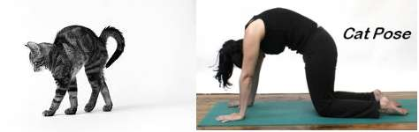
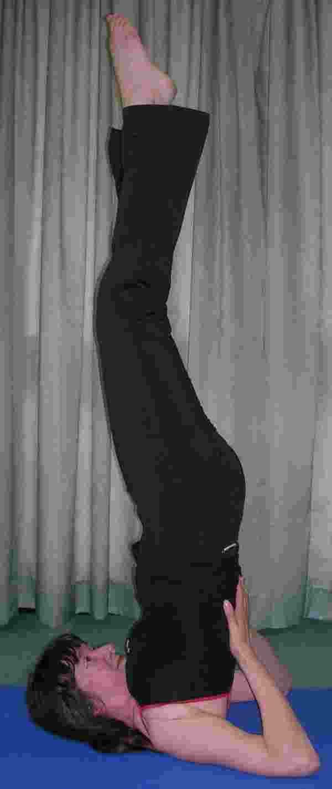

History of Yoga
Hatha Yoga is an ancient Indian exercise system developed by sages who observed the movement of plants and animals - particularly the feline creatures such as cats, lions and tigers, who have very supple spines. They observed how these animals are so efficient and agile in their movements when they are hunting and fighting.
In Hatha yoga, these movements have been copied to imbue yoga practitioners with the same benefits - these include strong supple back, good posture, effective breathing, confident balance and the art of concentration and relaxation.

Benefits of Yoga
If yoga is practised regularly, great benefits can be gained - increased suppleness is first and foremost. Physical suppleness helps a person retain youthfulness and avoid injury. Mental suppleness will help a person cope with the stresses and changes in modern life. Learning the art of deep, effective breathing and relaxation is also youth-prolonging since it cultivates a calm approach to everyday life.
If the practice of yoga is combined with a healthy moderate diet and a balanced lifestyle, the practitioner will develop a well-toned figure and confident posture. Finally, some yoga poses are what is known as "inverted" i.e. upside down! These are essential to remaining youthful because they rest the heart, improve circulation and strengthen the immune system. In effect, inverted postures work against the ageing effects of gravity!
Sue holds classes in Sutton Coldfield,
Shenstone and Great Barr so you can choose the one that is most
convenient for you. Ring or text 07743 028383 for more information.
|